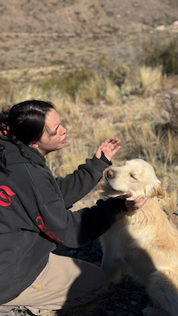

Bianca Licursi | WDD 130

This image represents me because I love dogs very much. Dogs are an important part of my life, and I really enjoy spending time with them.

This image represents me because I love dogs very much. Dogs are an important part of my life, and I really enjoy spending time with them.